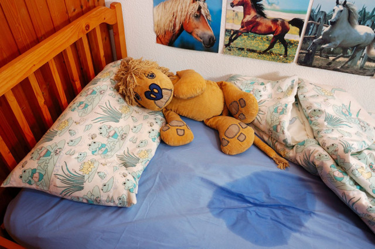

Ночное недержание мочи, которое медики называют энурезом, — распространенная проблема. Около пятнадцати процентов пятилеток мочат постель, мальчики чаще, чем девочки — в соотношении 4:1. Почти все дети перерастают эту неприятность, но все же целых 5% продолжают просыпаться в мокрой постели даже в подростковом возрасте.
ПРИЧИНЫ
В первые два года жизни рефлекс опорожнения мочевого пузыря является врожденным, и ребенок мочит подгузники. В возрасте около двух лет он начинает распознавать, когда мочевой пузырь наполнен, и может сознательно задержать мочеиспускание и подавить позывы помочиться. Удержание мочи растягивает мышцы мочевого пузыря и увеличивает его емкость. Почти все дети могут сознательно подавлять рефлекс мочеиспускания днем. Способность контролировать этот рефлекс ночью развивается между четырьмя и шестью годами, у мальчиков часто еще позже.
Есть дети с просто анатомически маленьким мочевым пузырем, который быстрее переполняется. Помимо этого, как стало ясно после исследований, у некоторых детей во время сна гипофиз вырабатывает меньше антидиуретического гормона (АДГ), заставляющего почки продуцировать меньше мочи, чтобы не переполнился мочевой пузырь. Энурез продолжается, если ночью нет достаточного контроля над мочевым пузырем со стороны мозга или если мочевой пузырь маленький и не в состоянии удерживать мочу на протяжении всей ночи. Время и взросление обычно излечивают оба этих состояния.
Сроки «зрелости» мочевого пузыря очень вариабельны, мальчики созревают позже девочек. Воспринимайте энурез как этап развития. Точно так же, как есть поздноходящие и поздноговорящие, так есть и «поздносухие ночные» дети. Ночной контроль мочевого пузыря возможен, когда ребенок может бессознательно подавлять рефлекс мочеиспускания. |
Исследования сна у страдающих энурезом показали, что мочеиспускание обычно происходит во время дельта-фазы — фазы глубокого сна. У таких детей эта фаза сна может быть более глубокой и длительной.
ЧТО ВАЖНО ЗНАТЬ ОБ ЭНУРЕЗЕ
1. Энурез — нарушение сна. Воспринимайте энурез как проблему связи между мочевым пузырем и мозгом. Ребенок спит настолько глубоко, что сигналы мочевого пузыря не в состоянии его разбудить. Он не знает о том, что мочевой пузырь переполнен, и еще не достиг уровня развития, когда может бессознательно подавить рефлекс на опорожнение мочевого пузыря.
СОВЕТ ДОКТОРОВ СИРС: САМ НАМОЧИЛ - САМ СТИРАЕТ Мочевой пузырь принадлежит вашему ребенку, и так же, как он учится контролировать его, он должен учиться брать на себя ответственность за то, где он его опорожняет. Поощрите его с вашей помощью оборудовать прачечную — сообразно его возрасту и развитию. Убедитесь, что он воспринимает стирку не как наказание, а как естественный результат мокрой постели. Возможно, это вынудит его больше стараться при обучении навыкам контроля мочевого пузыря. |
Фактически правильнее было бы использовать определение «мочащиеся во сне», а не «мочащиеся в постель».
Изредка энурез связан с психологическими проблемами. Теперь, когда вы понимаете, что есть анатомические и неврологические причины того, что дети мочат постели, вы можете отказаться от мысли, что ваш ребенок «просто ленится вставать ночью». Так что будьте, ласковы с ним, как были бы, если бы он заболел чем-нибудь другим.
2. Энурез излечим. Однажды родители и врачи взяли на вооружение подход «он это перерастет». Хотя это верно для большинства, но при современном уровне понимания проблемы и обучающих методик уже нет необходимости ребенку продолжать просыпаться в мокрой постели, а вам — иметь полную прачечную залитых мочой простыней.
3. Энурез может передаваться по наследству. Если оба родителя страдали энурезом в возрасте старше шести лет, у ребенка есть примерно 80% вероятности стать «мочащимся в постель». Если энурез был только у одного родителя, вероятность таких неприятностей у ребенка снижается до 40%.
ДЕВЯТЬ ШАГОВ К СУХИМ НОЧАМ
Мы практикуем этот пошаговый метод около 30 лет. Этот подход испытан временем и работает по меньшей мере у 70% наших пациентов.
Хотя он называется «Девять шагов», проблема обычно разрешается раньше, и большинство детей просыпаются сухими уже через пару месяцев.
1. Ведите дневник. На протяжении 30 дней отмечайте в календаре, как часто ребенок мочился в постель. Отмечайте мокрые ночи буквой «М», а сухие — буквой «С». Записывайте особенности дней и вечеров перед ночами, помеченными «М»: отличия в питании, деятельности, активности, уровне стресса или психологического напряжения в школе и дома. Попытайтесь выделить спусковые или сопутствующие условия. Например, вы можете обнаружить, что ребенок реже просыпается мокрым после выходных, когда он был более активным и менее напряженным, чем в школе.
2. Проконсультируйтесь с врачом. Хотя обычно энурез — просто отклонение развития, изредка встречаются анатомические аномалии и заболевания, которые мешают контролировать мочевой пузырь. Для начала врач проведет неврологическое обследование, чтобы убедиться, что нет никаких нарушений и аномалий иннервации мочевого пузыря.
Врачу может потребоваться посмотреть, как ребенок мочится, чтобы убедиться, что моча идет сильной непрерывной струей и отверстие, откуда она выходит (уретра), не слишком маленькое.
Если мочевой пузырь у ребенка меньше нормы, врач может попросить вас измерить объем мочи. Вот как это можно сделать: дайте ребенку выпить как можно больше воды, и пусть он удерживает мочу так долго, как только сможет, а затем помочится в емкость. Убедитесь, что он полностью опорожнил мочевой пузырь («натужься трижды»). Нормальная емкость мочевого пузыря ребенка определяется в унциях по формуле: его возраст + 2 унции, так что пятилетка должен удерживать 7 унций (около 200 мл) мочи. Если врач сочтет, что мочевой пузырь вашего ребенка слишком маленький, чтобы растянуть его, он может рекомендовать такое упражнение:
• «Терпи, сколько можешь...» — так называемое прогрессивное удержание мочи: раз в день предложите ребенку выпить много жидкости, а потом максимально долго удерживать мочу. Скажите ребенку, что он растягивает свой мочевой пузырь наподобие воздушного шарика, поэтому там может собираться больше мочи и ему не придется ходить по-маленькому так часто. Через несколько недель повторите измерение объема мочи вышеописанным способом. Нет смысла делать упражнение для растяжки мочевого пузыря, если ребенок не желает или не может сотрудничать — обычно до 8—9-летнего возраста.
Если ваш врач подозревает нарушение мочевыведения, структурное или функциональное нарушение мочевыводящих путей, он может направить ребенка на консультацию к урологу для проведения ультразвукового или рентгенологического исследования, чтобы осмотреть почки, мочевой пузырь и мочеточники. С помощью вашего дневника врач может найти скрытые причины энуреза, которые не относятся к мочевыводящей системе, но могут влиять на нее, например:
• Увеличение миндалин/аденоидов. Наш опыт свидетельствует, что это одна из наиболее нераспознаваемых причин энуреза. Большие миндалины и/или аденоиды ночью затрудняют дыхание, вызывая преходящие остановки дыхания, которые нарушают нормальные фазы сна.
СОВЕТ ДОКТОРОВ СИРС: НЕ ЗАДЕРЖИВАЙТЕ МОЧУ! Не делайте упражнения с удержанием мочи без консультации с врачом. Мы же хотим, чтобы ребенок слышал сигналы своего мочевого пузыря, а не игнорировал их? Это только временная методика, чтобы увеличить емкость мочевого пузыря. Кроме того, мы стараемся не использовать эту методику у девочек, потому что они более склонны к развитию инфекций мочевыводящих путей, а один из лучших способов избежать ИМВП — часто мочиться и держать мочевой пузырь пустым. Мальчикам с нарушениями мочевыводящих путей, например, с рефлюксами, также противопоказаны методики, требующие задерживать мочу. |
Это в свою очередь нарушает связь мозга и мочевого пузыря во время сна, что заканчивается мокрой простыней.
Лишь примерно у пяти процентов детей энурез является следствием не выявленного заболевания. У остальных — это просто отклонение развития.
3. Показывайте и рассказывайте в процессе игры. Расскажите ребенку о связи «мозг — мочевой пузырь». Например так, как мы объясняем это детям 5—7 лет во время приема. Нарисуйте мозг, связанный с мочевым пузырем «проводами». Объясните ребенку, что мочевой пузырь связан с мозгом примерно так: «Твой мочевой пузырь похож на воздушный шарик размером с бейсбольный мяч. Внутри него расположены нервные волоконца — они как сигнальщики сообщают мозгу, когда твой мочевой пузырь полон. Когда мочевой пузырь наполняется, надо идти в туалет. Ночью мозг спит. Когда мочевой пузырь наполняется, он сообщает об этом мозгу, но мозг отвечает: «Не мешай мне. Я сплю». Мочевой пузырь переполняется настолько, что не может удержать мочу, и ты мочишь постель. Мы собираемся сделать кое-какие забавные штуки, чтобы научить твой мозг слушать твой мочевой пузырь ночью».
4. Отправляться в постель с пустым мочевым пузырем. Многие дети, если они сильно устали или торопятся, идут в туалет перед сном, но мочатся немного и ложатся спать с наполовину заполненным мочевым пузырем. Научите тройному опорожнению. Вот как можно объяснить ребенку технику опорожнения мочевого пузыря: «Плюх, плюх, плюх — натужься три раза, чтобы сжать свой мочевой пузырь, — так ты выдавишь всю мочу и пойдешь спать с пустым мочевым пузырем».
5. Напоминайте о связи «мозг — мочевой пузырь» перед сном. Непосредственно перед сном напомните ребенку, как его мозг и мочевой пузырь разговаривают ночью. Засыпая, он программируется на то, чтобы встать, когда его мочевой пузырь будет полон. Перед тем как идти спать, пусть повторит фразы, запечатлевающие в его мозгу, что он должен сделать, когда почувствует, что мочевой пузырь наполнился: «Я встану и пойду в туалет, когда почувствую, что мой мочевой пузырь стал большим... Я плесну водой в лицо, чтобы проснуться, и натужусь три раза». Один из последних сценариев, который ваш ребенок повторяет перед отходом ко сну, — то, как он и его мочевой пузырь собираются вести себя ночью. Если вы не хотите вставать вместе с ребенком, поставьте в его комнату будильник и выставьте его на время через 2—3 часа после засыпания или перед тем, как ребенок обычно мочится в постель. Перед тем как он пойдет спать, расскажите ему, что он должен делать, когда прозвенит будильник: «Когда будильник зазвонит и ты почувствуешь, что твой мочевой пузырь полный, сходи в туалет и натужься три раза, чтобы выдавить всю мочу». Убедитесь, что вы включили ночники на пути от спальни до туалета. Чем старше становится ребенок, тем больше ответственности он должен принимать за состояние своей постели. Вам не надо вставать среди ночи. Это — его мочевой пузырь. Но будьте доброжелательным инструктором.
6. Потрясите и разбудите. Большинство детей мочат простыни через два часа после того, как заснут. Некоторые делают это позже. Независимо от того, когда это происходит с вашим ребенком, попробуйте проделать такое упражнение перед тем, как сами пойдете спать:
7. Вознаграждайте за сухие ночи. Так же, как вы бы хвалили и награждали ребенка за то, что он усвоил новый навык, например, совершенствуется в музыке, награждайте его и за навык в управлении своим телом. Попробуйте таблицу с наклейками. Сделайте календарь и прикрепляйте «М» после мокрых ночей и «С» — после сухих. Позвольте ему самостоятельно отметить сухую ночь. После пяти наклеек подряд он должен получить награду. Ребенка, которому требуется несколько месяцев для тренировки мочевого пузыря, можно наградить, если в этом месяце «сухих» наклеек больше, чем в предыдущем. Зачастую достаточной мотивацией служит награда в виде разрешения ночевать в гостях у друга.
СОВЕТ ДОКТОРОВ СИРС: ПООЩРЯЙТЕ НОЧЕВКИ У ДРУЗЕЙ Хотя на первый взгляд вам покажется, что ночевки у друзей смущают вашего страдающего энурезом ребенка, они могут послужить мотивацией. Кроме того, возможно, что у него есть хотя бы один друг, который тоже мочится в постель. Начните с поощрения ночевок у лучших друзей вашего ребенка, так как они вряд ли будут дразнить его. Демонстрируйте свое отношение к ночевкам как к «не такому уж большому событию». Если ребенок чувствует, что вас не «смущают» его проблемы, он будет ощущать себя увереннее. Предупредите родителей друга, что у вашего ребенка энурез. Скорее всего, они поймут и придумают, как сделать, чтобы ваш ребенок чувствовал себя более комфортно. Позаботьтесь, чтобы у него была клеенка или пластиковый пакет — подложить в спальный мешок. Поощряйте его желание поехать на недельку-другую в лагерь. Чем меньше он будет стесняться своей проблемы, тем меньше она будет становиться. |
8. Используйте достижения техники. Если ваш ребенок после всех вышеописанных мероприятий все равно чаще просыпается мокрым, чем сухим, и все больше беспокоится из-за этого, попробуйте устройство, отслеживающее состояние мочевого пузыря. Его можно получить у педиатра или заказать через Интернет. Оно представляет собой чувствительную к влажности пластину, которая вкладывается в нижнее белье или вшита в простыню. Когда капля-другая мочи попадает на устройство, включается звуковой сигнализатор, прикрепленный к пижаме ребенка. Принцип действия основан на выработке условного рефлекса. Каждый раз, когда мочевой пузырь наполняется, раздается гудок, таким образом ребенок тренируется чувствовать наполнение мочевого пузыря и просыпаться. Цель приспособления — «сыграть тревогу», а ребенка — встать и пойти в туалет до того, как включится сигнал. Мы используем это устройство в своей практике уже около двадцати лет и нашли, что 90% добиваются успеха.
Во время приема мы показываем ребенку и родителю, как им пользоваться: представляем, что кабинет — это спальня ребенка, и затем репетируем ситуации, которые произойдут ночью. Вот как мы это делаем у себя в офисе, а вы можете сделать это дома самостоятельно:
9. Лекарства для сухих ночей? Мы категорически возражаем против использования некоторых старых препаратов, таких как антидепрессанты, для лечения энуреза. По нашим наблюдениям, побочные эффекты — нарушения сна и беспокойство — наносят больше вреда, чем сам энурез. Безопасно и эффективно применение десмопрессина, который действует подобно антидиуретическому гормону и снижает продукцию мочи ночью.
Он продается в виде назального спрея и таблеток и назначается перед сном в течение двух-трех месяцев, а затем дозу постепенно снижают до отмены. Но не забывайте применять модель «таблетка-навык» при энурезе. Одни таблетки не помогут, но они сработают в сочетании с тренировкой упомянутых навыков. В большинстве случаев для лечения энуреза достаточно одних навыков и можно обойтись без таблеток.
Здоровье ребенка от докторов Сирс / Сирс У. и др.